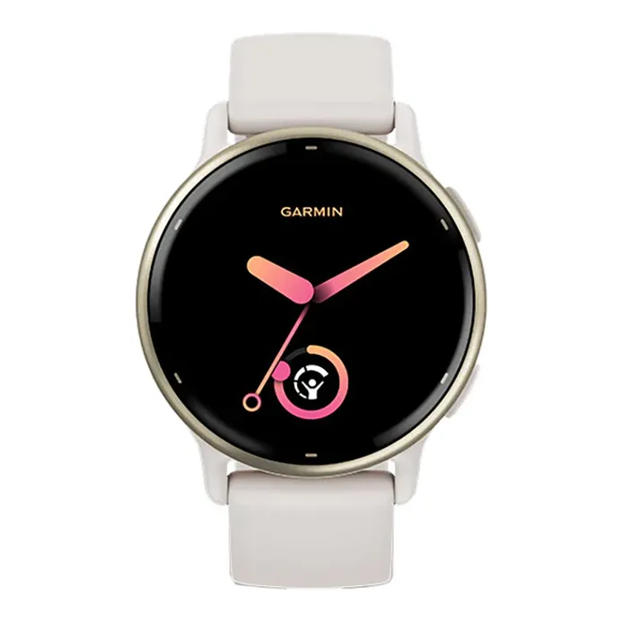

Rp 5.349.000
Garmin Vivoactive 5 varian Gold Alumunium Bezel dan Ivory Silicone Band menghadirkan kombinasi gaya mewah dan teknologi kesehatan mutakhir. Dilengkapi layar AMOLED 1,2″, lebih dari 30 mode olahraga, pemantauan Body Battery™, Sleep Coach, serta masa pakai baterai hingga 11 hari. Ideal untuk gaya hidup aktif sekaligus stylish.
| Model | 010-02862-51 / 010-02862-11 |
|---|---|
| Case Size | 42.2 × 42.2 × 11.1 mm |
| Weight | 23-26 g (±36 g dengan tali) |
| Display | 1.2″ AMOLED (390×390 pixels) |
| Lens / Glass | Corning® Gorilla® Glass 3 |
| Case & Bezel Material | Reinforced Polymer / Aluminium Bezel |
| Band Material | Silicone Band – 20 mm Quick Release |
| Water Rating | 5 ATM / 50 m |
| Battery Life |
Smartwatch Mode: Up to 11 days Battery Saver Mode: Up to 21 days All-Systems GNSS: Up to 17 h (with music: up to 8 h) |
| Sensors | GPS, GLONASS, Galileo, Wrist HR, Pulse Ox, Altimeter, Compass, Accelerometer, Thermometer, Ambient Light |
| Health Features | Body Battery™, Sleep Score & Coaching, Stress Tracking, Women’s Health, Hydration & Respiration Tracking |
| Sports Modes | 30+ Preloaded Sports Apps including Wheelchair Mode |
| Connectivity | Bluetooth®, ANT+, Wi-Fi, Smart Notifications, Connect IQ Store |